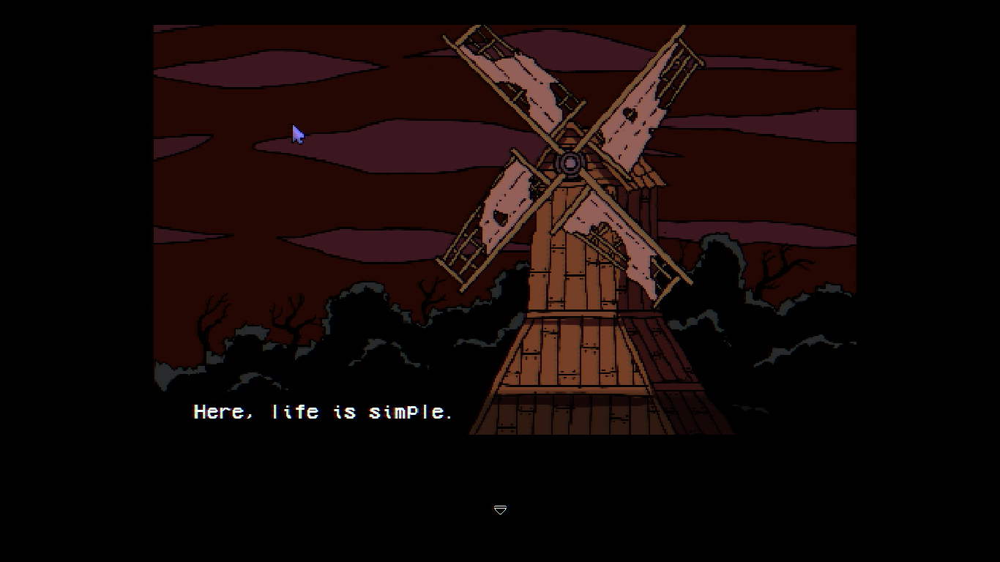

Welcome to Elderfield is a horror farming role playing game (RPG). The game plans to fully release by late 2026. The game features farming, cooking, mining, and making friends with the townspeople.
This game was created by Chris Cote, his debut into game development. Below, you can see the art style is not an 8bit, but 16bit art style. This style is common in games like: Metroid, Street Fighter 2, and Mario's World. It contains mostly dark colors like browns, blacks, reds, and some blues to create an eerie or spooky feel.

Cutscene of when you finally arrive at the main town and escape the evil wizard and his creation.
Characters
Player (me) - Looks like anything. They have a multi-layered character customization screen
Tanner - main NPC, wanders around, homeless
Sam - A lost, grundge styled girl. You meet her second by the Greystone Estates
Ellie - Shes apart of the general store, Main Worker
Xxarteck Cultist - One of the wizards and his men. Has me fight a creature
Areas
Elderfield Farm - The farm that houses the town's food
The Old Woods - The place where you meet the wizard men
Greystone Estates - Houses, some that I own, in the town
Town Outskirts - Anywhere that is at the edge of the map
Elderfield Store - Mall where the townspeople go to shop
Elderfield Lake - A wide, still lake at the edge of town
Objects
Stick - Used in first fight against the Imperfect Creation
Imperfect Creation - Monster that the wizardmen have you fight. Super weak boss
Elderfield Farm Animals - The animals on the farm: Cats, Cattle
Roads - Dirt & paved roads that connect the town. Grid style layout
String - Loot from the monsters you kill as well as a crafting ingrediant
Trailer
3:47 Trailer describing the in-progress game
Kumu Analysis
Game Review
After consuming some of the game I can confidently say this game is not meant to be very difficult. Upon fighting one of the bosses I spammed random attacks and won. This also be because it was an early boss. The hardest aspect of the game I would consider to be located the necessary objects. For example, you had to bring wheat to the Elderfield Farm which was bought at the store. The Store took a good 5 minutes to find on my own.
Overall, I somewhat enjoyed the game. I am not too into RPG style games, although I do like watching them. I personally, don't find them entertaining enough to sink time into. Theres no real way to get much better at them.